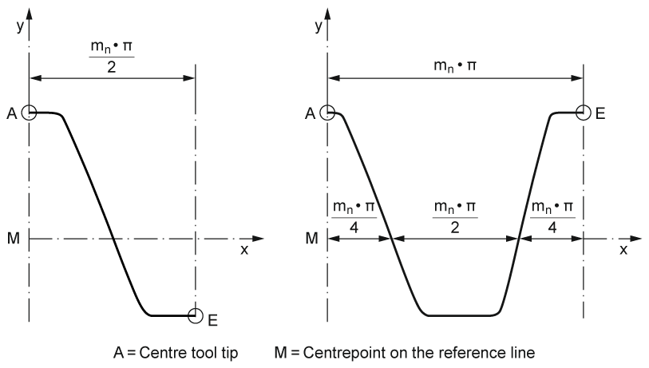

|
|
|


使用导入的滚刀生成圆柱齿轮
您可以从 CAD 系统以 格式导入刀具轮廓。为此，从预定义图层中定义半齿（对于非对称齿则定义全齿）。

图 15.73：刀具齿廓
您可以指定包含轮廓的图层，或选择 以用于所有数据。然后您可以决定以端面还是法向截面导入刀具，也可以更改模数。您在此处输入的变位系数决定齿厚。
单击“变位展成刀具”选项，为刀具选择一个与程序生成的圆柱齿轮不同的法向模数。
单击“输入数据作为参考”选项以修改图纸中的模数。然后刀具将缩放到基本数据中指定的法向模数。
注意
此工序不应与“自动”工序结合，除非有意为之。要禁用“自动”，右键点击“禁用”。
Generating a cylindrical gear with an imported hobbing cutter
You can import the cutter contour from the CAD system in format. To do this, define a half tooth (or a full tooth for an asymmetric tooth) from the predefined layer.
Figure 15.73: Tool profile
You can either specify the layer that includes the contour or select for all the data. You can then decide whether to import the tool in transverse section or in normal section, and also change the module. The profile shift coefficients you enter here determine the tooth thickness.
Click on the "Cutter for displaced generation" option to select a normal module for the tool that differs from the cylindrical gear generated by the program.
Click on the "Input data as a reference" option to modify the module in the drawing. The cutter is then scaled to the normal module specified in the basic data.
Note
This operation should not be combined with the "automatic" operation, if this is not intended. To deactivate "automatic", right-click "Deactivate".